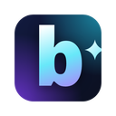
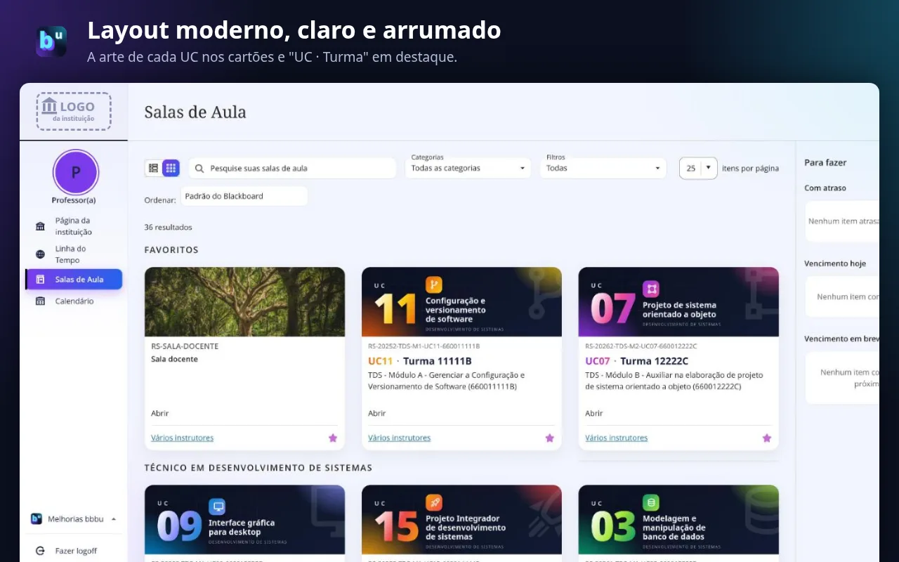
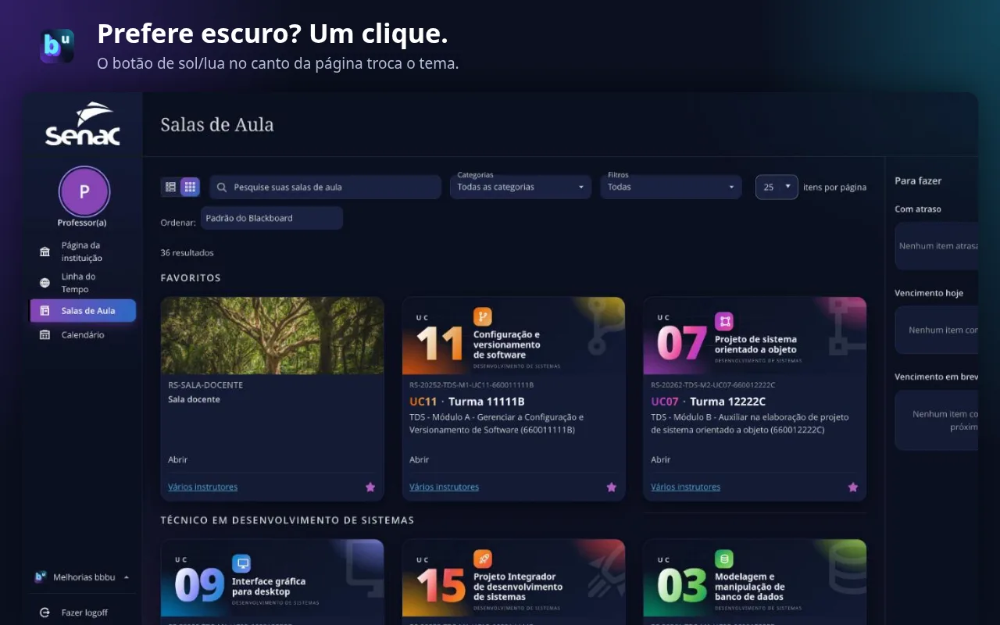
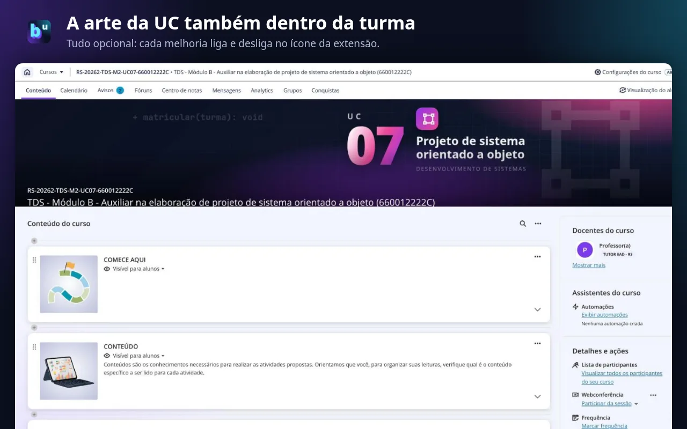
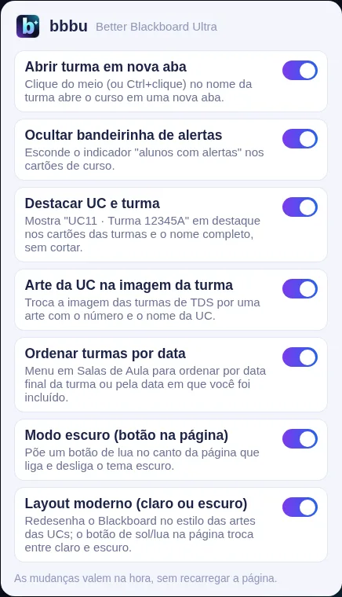
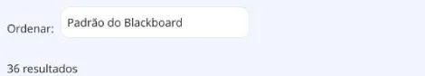
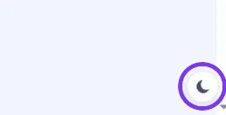

bbbu - Better Blackboard Ultra
Extensão gratuita para navegador · versão 1.3
O bbbu deixa o Blackboard Ultra do Senac (senac.blackboard.com) mais prático para professores e alunos. Cada melhoria tem seu próprio botão: clique no ícone da extensão para ligar ou desligar, e a mudança vale na hora, sem recarregar a página.





Melhorias
- Layout moderno (claro ou escuro): redesenha o Blackboard com cartões arredondados, cores suaves e destaque para cada turma. Vem no tema claro; um botão de sol/lua no canto da página troca para o escuro, azul-marinho.
- Arte da UC na imagem da turma: nas turmas do Técnico em Desenvolvimento de Sistemas (UC01 a UC15), troca a imagem padrão por uma arte com o número, o nome e um ícone da UC, nos cartões e no topo da turma.
- Destacar UC e turma: mostra em destaque "UC11 · Turma 12345A" no cartão, tirado do código da turma, e deixa o nome completo sem cortar.
- Ordenar turmas por data: um menu em Salas de Aula ordena as turmas pela data final ou pela data em que você foi incluído, e mostra essa data no cartão.
- Abrir turma em nova aba: clique do meio (ou Ctrl+clique) no nome da turma abre o curso em outra aba, sem sair da lista de cursos.
- Ocultar bandeirinha de alertas: esconde o indicador "alunos com alertas" nos cartões de curso.
- Modo escuro (botão na página): para quem prefere o visual original do Blackboard, um botão de lua escurece a página. Com o layout moderno ligado ele não é necessário.
Não gostou de alguma? Desligue no ícone da extensão e o Blackboard volta a ser como era.
Como instalar
Abra a página da extensão na Chrome Web Store:
Instalar pela Chrome Web Store
A extensão está em revisão na loja; o link passa a funcionar assim que ela for aprovada.
Clique em "Usar no Chrome" e confirme em "Adicionar extensão". Funciona no Chrome e em navegadores baseados nele, como Edge, Vivaldi, Brave e Opera.
Fixe o ícone para achar fácil: clique na peça de quebra-cabeça (Extensões) ao lado da barra de endereço e no alfinete ao lado de "bbbu". O ícone roxo com um "b" passa a ficar sempre à vista.
Entre (ou recarregue) o Blackboard em senac.blackboard.com. Pronto: as melhorias já vêm ligadas.
Como usar
Ligue e desligue cada melhoria. Clique no ícone do bbbu na barra do navegador: abre uma lista com um botão para cada melhoria. A mudança vale na hora, sem recarregar a página, e fica guardada para as próximas vezes.

Ache a turma pelo número. Em Salas de Aula, cada cartão mostra a UC e a turma em destaque (e, nas turmas de Desenvolvimento de Sistemas, a arte da UC). O nome completo aparece sem cortes.
Ordene as turmas. Logo acima da lista, o menu Ordenar troca a ordem padrão pela data final da turma (mais próxima ou mais distante primeiro) ou pela data em que você foi incluído (mais recente ou mais antiga primeiro). A data escolhida aparece no cartão.

Troque entre claro e escuro. No canto inferior direito de qualquer página do Blackboard fica um botão redondo de sol/lua. Um clique troca o tema; o navegador lembra a sua escolha.

Abra turmas em outra aba. Clique com o botão do meio do mouse (ou Ctrl+clique, ⌘+clique no Mac) no nome da turma: ela abre numa aba nova e a lista de cursos continua onde estava.
Privacidade
A extensão só funciona em senac.blackboard.com, não coleta nenhum dado e não envia nada para fora do seu navegador. Detalhes na política de privacidade.
Novidades
- 1.3 · novembro de 2026 (chega à loja em breve)
- Layout moderno com tema claro e escuro, artes das UCs nas turmas de Desenvolvimento de Sistemas, destaque "UC · Turma" nos cartões, menu para ordenar as turmas por data, modo escuro para o visual original e ícone novo.
- 1.2 · 3 de novembro de 2026
- Primeira versão pública, com as melhorias "Abrir turma em nova aba" e "Ocultar bandeirinha de alertas".
Apoie o projeto
O bbbu é e continuará gratuito. Se ele facilitou o seu dia e você quiser agradecer ou ajudar a manter o desenvolvimento de novas melhorias, qualquer valor por Pix é bem-vindo.

Escaneie o QR Code no app do seu banco e escolha o valor, ou use a chave Pix (e-mail):
lordehenry@gmail.com
Projeto independente, sem vínculo com a Anthology/Blackboard ou com o Senac. Dúvidas e sugestões: profevine.com.br.